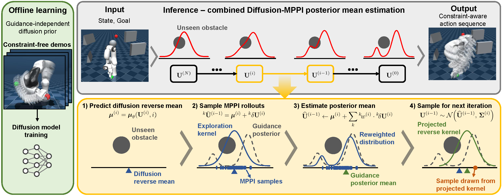
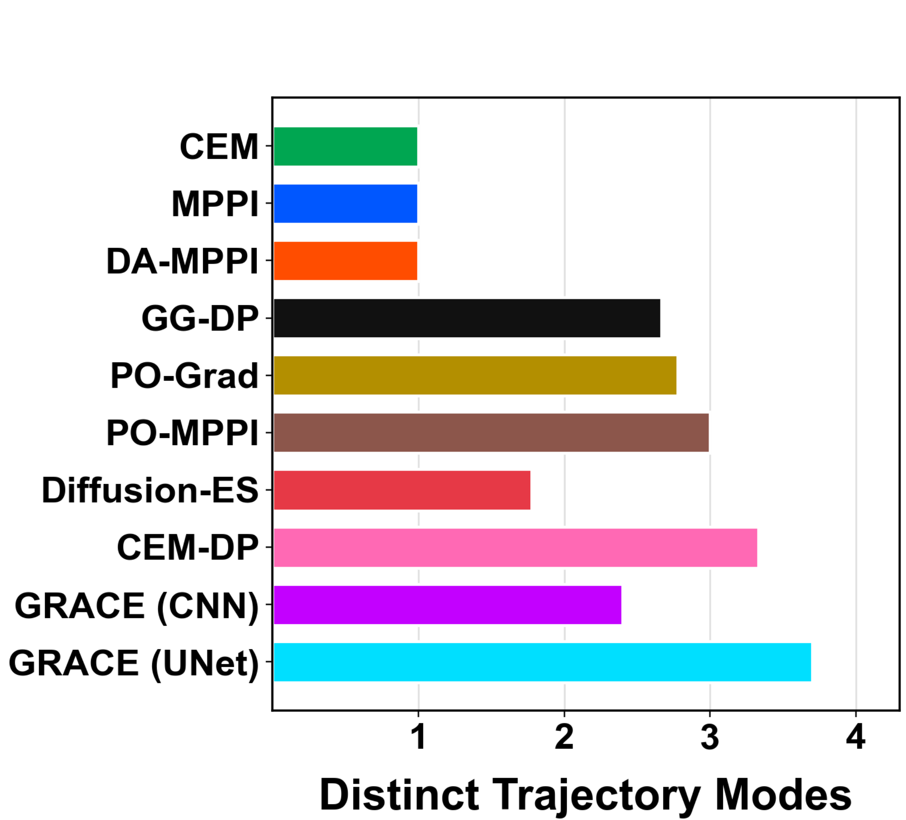
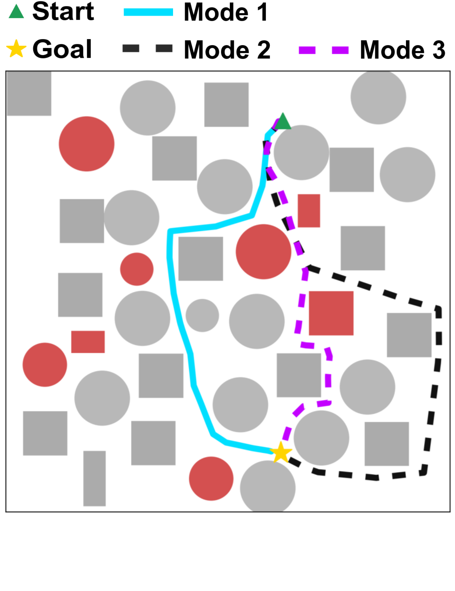
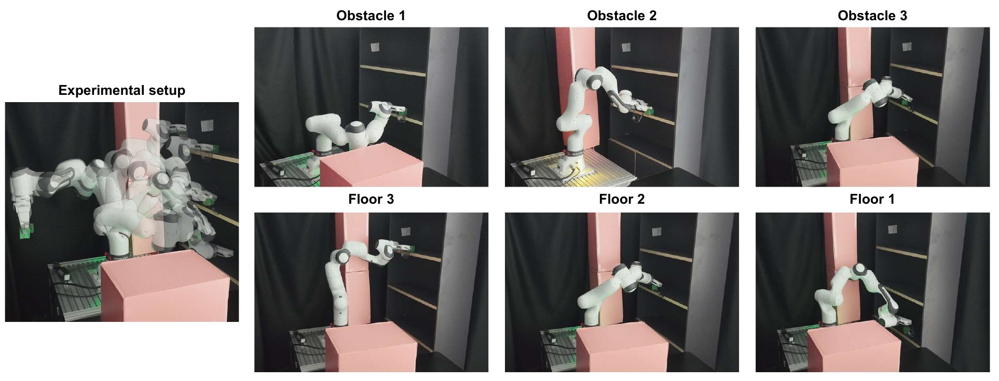
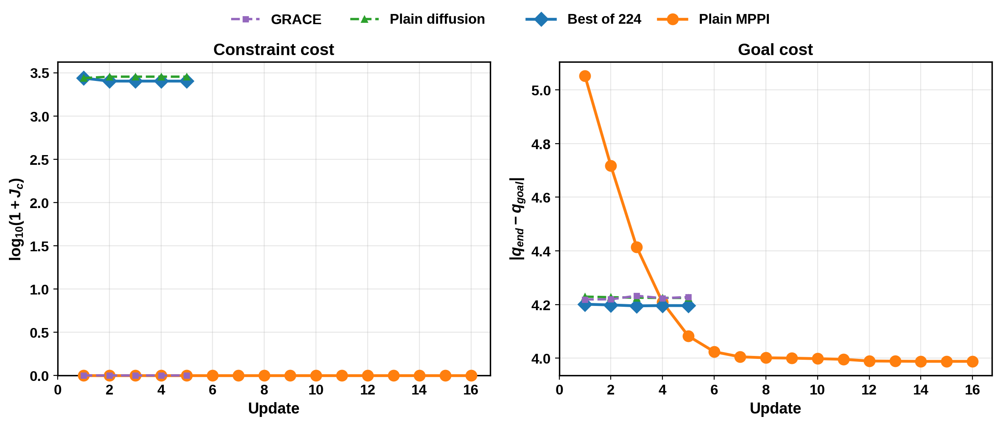
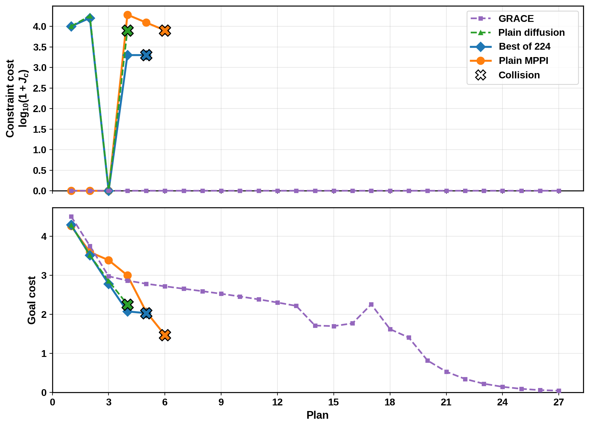
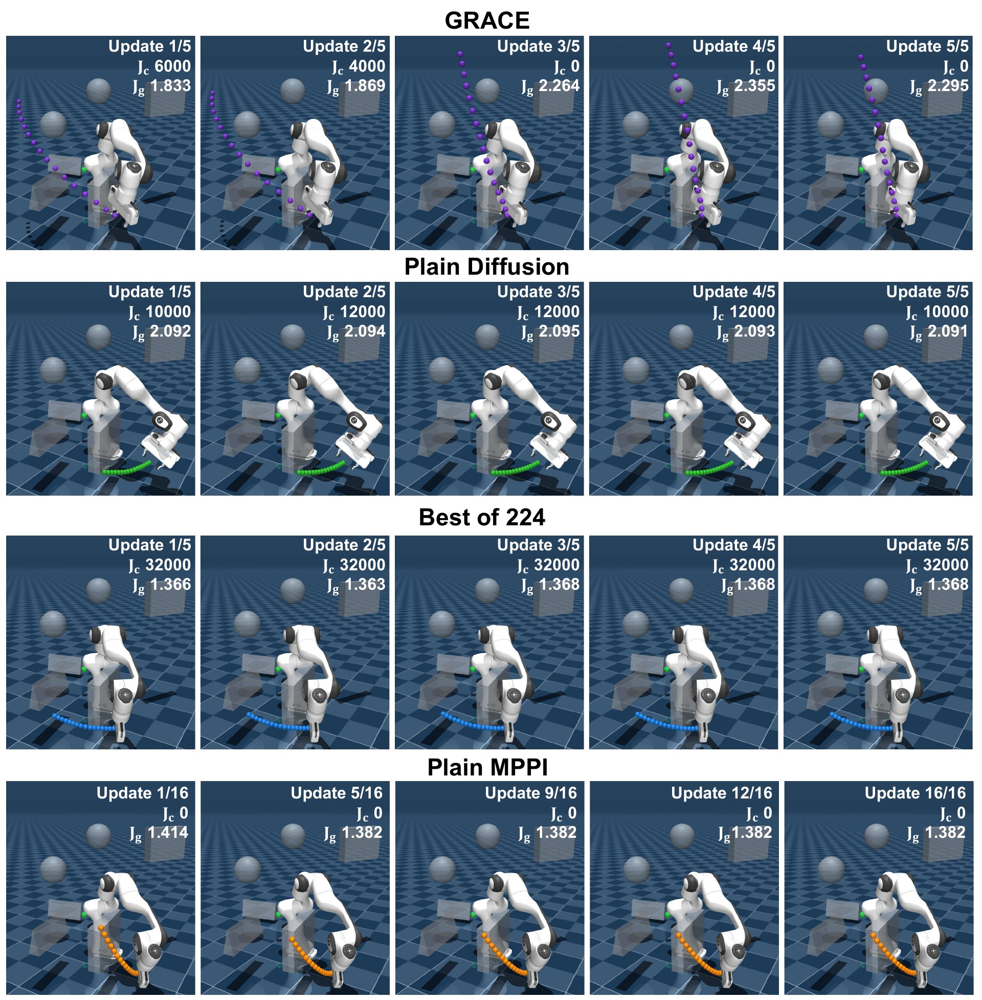
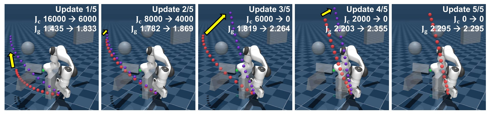
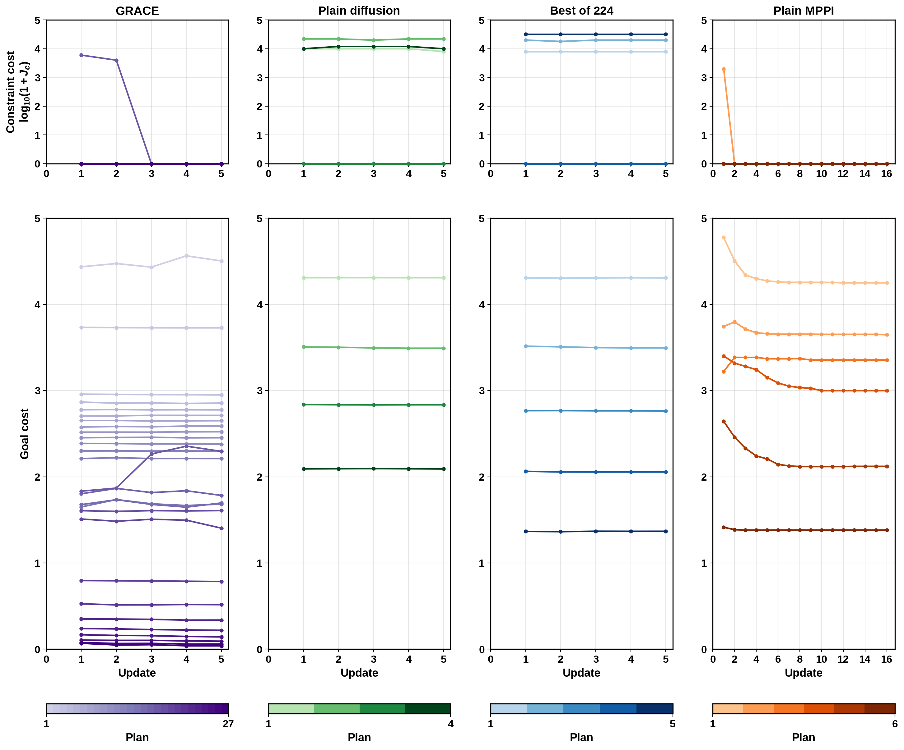
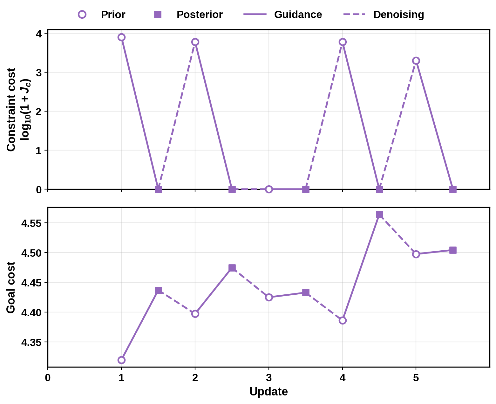

GRACE: Gradient-Free Robot Action Generation via Combined Diffusion-MPPI Posterior Mean Estimation
Abstract
Diffusion policies generate multimodal robot action sequences from demonstrations, but steering them toward deployment-time constraints typically relies on differentiable guidance costs. This excludes many practical safety constraints, such as binary collision checks, joint limits, and black-box rollout costs that are nondifferentiable. We propose Gradient-free Robot Action generation via Combined diffusion-MPPI posterior mean Estimation (GRACE), which guides a pretrained diffusion policy with Model Predictive Path Integral (MPPI) control using only forward cost evaluations. Building on the common score-ascent structure of diffusion and MPPI, GRACE constructs a cost-conditioned guidance posterior at each reverse step and estimates its mean with a single MPPI update centered at the diffusion reverse mean. For differentiable costs, GRACE recovers conventional gradient guidance under a first-order, matched-covariance approximation. GRACE attains higher success rates than diffusion-based and sampling-based baselines in simulation. On a real 7-DoF manipulator, GRACE achieves 43/45 successes without obstacle collisions, compared with 17/45 for the unguided prior.

Contributions
- MPPI-guided posterior-mean diffusion. GRACE integrates MPPI into reverse diffusion by projecting a Boltzmann cost-conditioned posterior onto the Gaussian reverse-kernel family and estimating its mean from MPPI-weighted rollouts, enabling gradient-free adaptation without retraining.
- Connection to gradient guidance. We show that GRACE recovers conventional one-step gradient guidance for differentiable costs under a first-order approximation with the guidance covariance matched to the diffusion reverse covariance.
- Experimental validation. GRACE achieves the highest success rates in 2D and 3D simulations, with analyses of trajectory multimodality, guidance sensitivity, and execution horizons, and achieves 43/45 successes without obstacle collisions across three real-robot obstacle conditions.
Guidance on real hardware. The pretrained prior supplies the demonstrated manipulation behavior, while GRACE reweights forward-evaluated rollouts inside each reverse step to shift the posterior mean around an unseen obstacle—without retraining or differentiating the cost or dynamics.
Method

GRACE combines a guidance-independent diffusion prior learned offline with gradient-free, deployment-time cost evaluation. Guidance is applied during the last Ng denoising steps (Ng = 10 in 2D navigation and 5 in 3D manipulation), where the intermediate trajectories are sufficiently denoised for sampled rollouts to provide informative cost evaluations; earlier steps follow the unguided reverse process. At each guided step, the method performs the following posterior-mean update:
- Predict the diffusion reverse mean. The pretrained denoiser produces the reverse mean for the current noisy action sequence.
- Sample MPPI rollouts. Candidate action sequences are drawn from an exploration kernel centered at the diffusion reverse mean, with a guidance covariance that is controlled independently of the diffusion schedule.
- Estimate the guidance posterior mean. The rollouts are evaluated with the deployment-time cost and reweighted to estimate the mean of the cost-conditioned guidance posterior.
- Project and sample the next iterate. The estimated mean defines a projected reverse kernel that retains the diffusion-schedule covariance, and the next denoising iterate is sampled from this kernel.
The construction follows from the shared score-ascent form of diffusion and MPPI. Under differentiable costs, a first-order approximation with matched guidance and reverse covariances recovers conventional one-step gradient guidance as a special case.
Simulation Experiments
All diffusion-based baselines use the same UNet prior as GRACE. PO-MPPI applies MPPI refinement after denoising, and CEM-DP, inspired by D-Cubed, propagates the lowest-cost candidate within reverse diffusion; both use the same number of guidance updates and K = 1,000 samples per update as GRACE.
Point-Mass Navigation
A planar point mass must reach the goal across a cluttered map without collision or timeout, where the gray obstacles were present during training but the red ones appear only at inference, and every clip below shares the same map, differing only in the planner.
CEM
MPPI
DA-MPPI
GG-DP
PO-Grad
PO-MPPI
Diffusion-ES
CEM-DP
GRACE (CNN, ours)
GRACE (UNet, ours)
| Method | Success [%] ↑ | Collision Fail ↓ | Path Length [m] |
|---|---|---|---|
| CEM | 8/30 (26.7%) | 0/30 | 1.247 ± 0.143 |
| MPPI | 8/30 (26.7%) | 0/30 | 1.241 ± 0.123 |
| DA-MPPI | 8/30 (26.7%) | 0/30 | 1.233 ± 0.120 |
| GG-DP | 18/30 (60.0%) | 12/30 | 2.302 ± 1.115 |
| PO-Grad | 18/30 (60.0%) | 12/30 | 2.657 ± 1.021 |
| PO-MPPI | 22/30 (73.3%) | 2/30 | 2.546 ± 1.340 |
| Diffusion-ES | 7/30 (23.3%) | 23/30 | 2.700 ± 0.832 |
| CEM-DP | 15/30 (50.0%) | 15/30 | 1.882 ± 0.636 |
| GRACE (CNN) | 25/30 (83.3%) | 2/30 | 3.158 ± 1.379 |
| GRACE (UNet) | 25/30 (83.3%) | 1/30 | 2.688 ± 1.224 |
Bold marks the best success rate and collision count over 30 random start–goal pairs, ties included, and path lengths are averaged over successful trials only. CEM, MPPI, and DA-MPPI remain collision-free but reach only 26.7% success, as their goal-cost-driven proposals favor short, near-straight routes over feasible detours. GG-DP and PO-Grad reach 60.0% but each incurs 12 collision failures, as local gradients can reduce the collision cost without directing trajectories toward feasible passages. PO-MPPI reaches 73.3% with two collision failures: sampling explores alternative detours, but the final diffusion trajectory remains a fixed prior reference throughout post-optimization. Diffusion-ES reaches 23.3% with 23 collision failures, and CEM-DP reaches 50.0% with all 15 failures due to collision, as propagating only the lowest-cost candidate under the shrinking diffusion-schedule variance can steer denoising toward collision-prone routes. GRACE achieves the highest success rate, 83.3% with both backbones, with two collision failures for CNN and one for UNet. The short paths of the diffusion-free planners reflect easier configurations rather than better planning quality, and GRACE's longer paths reflect the detours required to solve harder configurations that other methods fail.
Trajectory Multimodality

(a)

(b)
Sensitivity Analysis
| Update | λ | Σg | K | Success ↑ | Collision ↓ | Timeout ↓ |
|---|---|---|---|---|---|---|
| Weighted | 0.5 | 0.3 | 1,000 | 25/30 | 1 | 4 |
| Weighted | 0.005 | 0.3 | 1,000 | 21/30 | 2 | 7 |
| Weighted | 0.00005 | 0.3 | 1,000 | 22/30 | 7 | 1 |
| Best sample | — | 0.3 | 1,000 | 21/30 | 9 | 0 |
| Weighted | 0.5 | 0.3 | 300 | 22/30 | 2 | 6 |
| Weighted | 0.5 | 0.3 | 50 | 19/30 | 2 | 9 |
| Weighted | 0.5 | 0.1 | 1,000 | 17/30 | 13 | 0 |
| Weighted | 0.5 | 0.7 | 1,000 | 2/30 | 0 | 28 |
The first row is the reference setting (λ = 0.5, Σg = 0.3, K = 1,000). Decreasing the temperature λ concentrates the importance weights, reducing the effective sample size from 619 to 62 and finally to 1, while collision failures increase; the best-sample update, which keeps only the lowest-cost rollout, incurs nine collision failures. Reducing K lowers success, mainly through more timeouts at K = 50. The guidance covariance trades exploration against convergence: Σg = 0.1 causes frequent collisions, whereas Σg = 0.7 avoids collisions but rarely converges.
FR3 Goal-Reaching
A 7-DoF Franka Research 3 (FR3) must reach goal joint configurations without violating obstacle, self-collision, floor-contact, or joint-limit constraints introduced only at inference. Each clip below shows one representative episode of that planner, with the start in green and the goal in red; obstacle layouts and start–goal pairs are randomly generated per episode.
CEM
MPPI
DA-MPPI
GG-DP
PO-Grad
PO-MPPI
Diffusion-ES
CEM-DP
GRACE (CNN, ours)
GRACE (UNet, ours)
| Method | Success [%] ↑ | Failure Modes | Computation Time [ms] ↓ | Guidance Time [ms] ↓ | ||||
|---|---|---|---|---|---|---|---|---|
| Obstacle | Self-coll. | Joint-limit | Floor | Timeout | ||||
| CEM | 24/30 (80.0%) | 1 | 0 | 0 | 0 | 5 | 153.45 ± 2.55 | — |
| MPPI | 23/30 (76.7%) | 2 | 0 | 5 | 0 | 0 | 29.88 ± 0.49 | — |
| DA-MPPI | 23/30 (76.7%) | 6 | 0 | 0 | 0 | 1 | 154.22 ± 2.49 | — |
| GG-DP | 13/30 (43.3%) | 8 | 2 | 3 | 1 | 3 | 1059.03 ± 7.98 | 644.57 ± 4.95 |
| PO-Grad | 13/30 (43.3%) | 5 | 1 | 6 | 1 | 4 | 956.02 ± 7.24 | 546.50 ± 3.12 |
| PO-MPPI | 26/30 (86.7%) | 3 | 1 | 0 | 0 | 0 | 629.35 ± 9.25 | 181.45 ± 1.68 |
| Diffusion-ES | 12/30 (40.0%) | 16 | 0 | 0 | 2 | 0 | 1664.35 ± 6.72 | 217.87 ± 0.70 |
| CEM-DP | 10/30 (33.3%) | 16 | 1 | 1 | 2 | 0 | 600.97 ± 16.19 | 181.55 ± 1.63 |
| GRACE (CNN) | 27/30 (90.0%) | 2 | 0 | 0 | 0 | 1 | 258.14 ± 2.92 | 181.66 ± 1.51 |
| GRACE (UNet) | 28/30 (93.3%) | 1 | 0 | 0 | 0 | 1 | 597.72 ± 7.87 | 181.36 ± 1.18 |
Bold marks the best success rate and computation time over 30 random obstacle layouts, and guidance does not apply to diffusion-free planners (—). CEM reaches 80.0% success, while MPPI and DA-MPPI each reach 76.7%, with failures concentrated on joint limits for MPPI, obstacle collisions for DA-MPPI, and near-goal timeouts for CEM. GG-DP and PO-Grad both reach 43.3% with failures across several safety constraints, as a single weighted gradient direction can leave conflicting constraints unresolved. PO-MPPI reaches 86.7%, while Diffusion-ES and CEM-DP reach only 40.0% and 33.3%, each with 16 obstacle collisions. GRACE achieves the highest success rates, 90.0% for CNN and 93.3% for UNet, with two and one obstacle collisions, respectively. PO-MPPI, CEM-DP, and GRACE require nearly identical guidance time of about 181 ms under the same sampling budget, and the lightweight CNN backbone reduces the total computation time to 258 ms. GRACE (UNet) also maintains 93.3% success for execution horizons Hexec ∈ {8, 16, 32}.
Real-World Experiments
A physical 7-DoF FR3 places a grasped object on a bookshelf while avoiding obstacles introduced near the shelf at deployment time. The diffusion prior is trained on demonstrations collected in a simulated replica of the workspace without these obstacles and is deployed without retraining. Three obstacle conditions are tested: a low obstacle on the left of the shelf (Obstacle 1), a tall obstacle on the right (Obstacle 2), and both together (Obstacle 3). Each trial targets one of the three shelf levels, with the start configuration and goal placement randomly offset laterally, and five trials are run per shelf level under each condition, giving 45 trials each for GRACE (UNet) and the unguided Diffusion Policy (UNet). On hardware, GRACE predicts a 32-step trajectory and triggers the next planning update before the current chunk is exhausted; typically 27 to 28 of the 32 steps are executed before the new trajectory replaces the remainder, an effective replanning rate of about 0.12 Hz.

Each clip shows one trial; the numbers give the successes out of the five trials at that shelf level.
Low obstacle on the left of the shelf.
Diffusion Policy (unguided)
Floor 1 · 0/5
Floor 2 · 2/5
Floor 3 · 5/5
GRACE (ours)
Floor 1 · 4/5
Floor 2 · 5/5
Floor 3 · 5/5
Tall obstacle on the right of the shelf.
Diffusion Policy (unguided)
Floor 1 · 4/5
Floor 2 · 4/5
Floor 3 · 2/5
GRACE (ours)
Floor 1 · 5/5
Floor 2 · 5/5
Floor 3 · 5/5
Both obstacles, leaving a passage between them.
Diffusion Policy (unguided)
Floor 1 · 0/5
Floor 2 · 0/5
Floor 3 · 0/5
GRACE (ours)
Floor 1 · 5/5
Floor 2 · 4/5
Floor 3 · 5/5
| Method | Obstacle 1 | Obstacle 2 | Obstacle 3 | Total ↑ |
|---|---|---|---|---|
| Diffusion Policy | 7/15 | 10/15 | 0/15 | 17/45 (37.8%) |
| GRACE (Ours) | 14/15 | 15/15 | 14/15 | 43/45 (95.6%) |
Bold marks the best value per column. The demonstrations mainly contain two approach modes, passing to the left or to the right of the shelf, so the unguided policy succeeds only when the sampled mode happens to remain clear of the obstacle at the target shelf level, and it fails in every trial once both obstacles are present. GRACE steers the sample away from a blocked mode during denoising, toward the open mode or through the passage between the obstacles, and succeeds in 43 of 45 trials with no obstacle collision. Its two failures are a placement inaccuracy under Obstacle 1 and a local minimum of the MPPI guidance in the passage under Obstacle 3.
Additional Analyses
These analyses on the FR3 goal-reaching task accompany our response to the reviewers and are not included in the paper due to the page limit. All methods use the same constraint costs, cost weights, H, and Hexec as the FR3 experiment, and for this comparison GRACE and plain MPPI additionally share K, λ, and the sampling covariance. We report the constraint cost log10(1 + Jc) and the goal cost Jg = ‖qend − qgoal‖ separately. For the diffusion-based methods, an update is one of the last five denoising steps, where GRACE applies guidance; for plain MPPI, an update is one iteration. Plain MPPI runs 16 iterations per plan to match GRACE's per-plan computation time. Plain diffusion is the unguided prior; because it is trained with a fixed 100-step schedule, it cannot be extended to GRACE's budget, so Best of 224, which denoises 224 samples in parallel and keeps the lowest-cost one at each update, is added as a budget-matched reference. Since it uses the cost, it is included only for reference.
Plain MPPI under a Matched Compute Budget
| Method | Success ↑ | Failure Modes | Time [ms] | ||||
|---|---|---|---|---|---|---|---|
| Obstacle | Self-coll. | Joint-limit | Floor | Timeout | |||
| Plain MPPI (1 iter.) | 23/30 (76.7%) | 2 | 0 | 5 | 0 | 0 | 29.88 ± 0.49 |
| Plain MPPI (16 iter.) | 23/30 (76.7%) | 7 | 0 | 0 | 0 | 0 | 571.12 ± 5.72 |
| GRACE (UNet) | 28/30 (93.3%) | 1 | 0 | 0 | 0 | 1 | 597.72 ± 7.87 |
The rows for one iteration and for GRACE are taken from the FR3 results above. With 16 iterations per plan, matching GRACE's per-plan time (571 vs. 598 ms), plain MPPI still succeeds in 23/30 trials; its failures shift from joint-limit violations (5 → 0) to obstacle collisions (2 → 7), as the additional iterations lead it to take riskier routes to lower the goal cost. The gap to GRACE (28/30) is therefore not a matter of compute.
Cost Convergence


Per-Update Trajectories


More plots


| Method | ms / plan | Composition |
|---|---|---|
| Plain diffusion | 420.9 ± 3.8 | 100 denoising steps |
| GRACE | 610.6 ± 8.1 | 423.8 diffusion + 186.8 guidance (5 × 37.4) |
| Best of 224 | 602.3 ± 4.4 | 224 samples in parallel |
| Plain MPPI (16 iter.) | 596.8 ± 9.8 | 16 × 37.3 |
Computation time of the first plan for each method, measured in the 20 analysis episodes (mean ± std over 20 plans).
Appendix: Experimental Details
The following tables summarize the diffusion-policy training configuration and the principal hyperparameters used for each planning and guidance baseline.
A. Diffusion-Policy Training
A.1 Dataset and Sequence Configuration
| Domain | Training data | Observation horizon | Action horizon | Prediction horizon | Action dimension | Observation features |
|---|---|---|---|---|---|---|
| Point-Mass 2D | 10,000 demonstrations | 2 | 8 | 16 | 2 | Goal displacement, position, velocity |
| Franka Research 3 (FR3) | 20,000 trajectories | 1 | 16 | 32 | 7 | Goal joint displacement, joint position, joint velocity |
A.2 Shared Training Configuration
| Parameter | Value |
|---|---|
| Training epochs | 2,000 |
| Batch size | 256 |
| Optimizer | AdamW |
| Initial learning rate | 1 × 10−4 |
| Learning-rate schedule | Cosine |
| Warm-up steps | 500 |
| Weight decay | 1 × 10−6 |
| Observation normalization | Enabled |
| Action normalization | Min–max |
| Exponential moving average | Enabled |
| Diffusion scheduler | DDPM |
| Training diffusion steps | 100 |
| Inference denoising steps | 100 |
| Beta schedule | Squared cosine |
| Prediction target | Noise ε |
A.3 Denoiser Architectures
| Backbone | Architecture |
|---|---|
| UNet | Channel dimensions 256–512–1024; diffusion-time embedding 256; kernel size 5; GroupNorm with 8 groups |
| CNN | 3 residual blocks; hidden and conditioning dimensions 256; diffusion-time embedding 64; kernel size 5; GroupNorm with 8 groups |
B. Point-Mass 2D
B.1 Task Settings
| Parameter | Value |
|---|---|
| Action representation | Normalized 2D planar control action |
| Action dimension | 2 |
| Agent radius | 0.02 |
| Goal tolerance | 0.05 m |
B.2 Sampling-Based Planners
CEM
| Parameter | Value |
|---|---|
| Population size | 1,000 |
| Optimization iterations | 5 |
| Elite fraction | 0.1 |
| Initial sampling std | 1.0 |
| Minimum sampling std | 0 |
MPPI
| Parameter | Value |
|---|---|
| Rollout samples | 1,000 |
| Optimization iterations | 1 |
| Sampling std | 1.0 |
DA-MPPI
| Parameter | Value |
|---|---|
| Rollout samples | 1,000 |
| Annealing iterations | 5 |
| Initial sampling std | 1.0 |
| Minimum sampling std | 0 |
| Inter-iteration std decay | 0.5 |
B.3 Diffusion-Based Methods
Gradient-Guided Diffusion
| Method | Backbone | Guidance stage | Gradient updates |
|---|---|---|---|
| GG-DP | UNet | Final 10 denoising steps | 5 per guided step |
| PO-Grad | UNet | After denoising | 50 |
Diffusion-ES
| Parameter | Value |
|---|---|
| Backbone | UNet |
| Population size | 100 |
| Evolutionary search iterations | 3 |
PO-MPPI and CEM-DP
| Method | Backbone | Guidance stage | Samples per update | Update |
|---|---|---|---|---|
| PO-MPPI | UNet | 10 MPPI updates after denoising | 1,000 | Cost-weighted mean, same sampling covariance as GRACE |
| CEM-DP | UNet | Final 10 denoising steps | 1,000 | Lowest-cost candidate, sampled with the diffusion-schedule covariance |
GRACE
| Method | Backbone | Guided denoising steps | Rollouts per guided step | Guidance covariance, Σg | Temperature, λ |
|---|---|---|---|---|---|
| GRACE-CNN | CNN | Final 10 steps | 1,000 | 0.3 | 0.5 |
| GRACE-UNet | UNet | Final 10 steps | 1,000 | 0.3 | 0.5 |
C. Franka Research 3 (FR3)
C.1 Task Settings
| Parameter | Value |
|---|---|
| Goal joint-space tolerance | 0.03 rad |
| Action representation | delta_q |
| Action dimension | 7 |
C.2 Sampling-Based Planners
CEM
| Parameter | Value |
|---|---|
| Population size | 1,000 |
| Optimization iterations | 5 |
| Elite fraction | 0.1 |
| Initial sampling std | 0.03 rad |
| Minimum sampling std | 0 |
MPPI
| Parameter | Value |
|---|---|
| Rollout samples | 1,000 |
| Optimization iterations | 1 |
| Sampling std | 0.007 rad |
DA-MPPI
| Parameter | Value |
|---|---|
| Rollout samples | 1,000 |
| Annealing iterations | 5 |
| Initial sampling std | 0.03 rad |
| Minimum sampling std | 0 |
| Inter-iteration std decay | 0.5 |
C.3 Diffusion-Based Methods
Gradient-Guided Diffusion
| Method | Backbone | Guidance stage | Gradient updates |
|---|---|---|---|
| GG-DP | UNet | Final 5 denoising steps | 5 per guided step |
| PO-Grad | UNet | After denoising | 25 |
Diffusion-ES
| Parameter | Value |
|---|---|
| Backbone | UNet |
| Population size | 100 |
| Evolutionary search iterations | 3 |
PO-MPPI and CEM-DP
| Method | Backbone | Guidance stage | Samples per update | Update |
|---|---|---|---|---|
| PO-MPPI | UNet | 5 MPPI updates after denoising | 1,000 | Cost-weighted mean, same sampling covariance as GRACE |
| CEM-DP | UNet | Final 5 denoising steps | 1,000 | Lowest-cost candidate, sampled with the diffusion-schedule covariance |
GRACE
| Method | Backbone | Guided denoising steps | Rollouts per guided step | Guidance covariance, Σg | Temperature, λ |
|---|---|---|---|---|---|
| GRACE-CNN | CNN | Final 5 steps | 1,000 | 0.3 | 0.5 |
| GRACE-UNet | UNet | Final 5 steps | 1,000 | 0.3 | 0.5 |
BibTeX
@article{park2026grace,
title={GRACE: Gradient-Free Robot Action Generation via Combined Diffusion-MPPI Posterior Mean Estimation},
author={Park, Leesai and Hong, Jiho and Kim, Sanghyun},
journal={IEEE Robotics and Automation Letters},
year={2026},
eprint={2607.21661},
archivePrefix={arXiv}
}